8. Granska och skapa arbetsorder
Agenten kan nu verifiera objektet och hämta felhistorik, tekniker och reservdelar. Innan den får skapa en arbetsorder behöver användaren se det samlade underlaget och fatta ett tydligt beslut. I det här kapitlet bygger vi därför ett separat ämne för granskning och godkännande.
När kapitlet är klart har du:
- skapat ämnet Granska och skapa arbetsorder
- lagt till fem indatavariabler för det verifierade underlaget
- byggt ett adaptivt kort med knapparna Godkänn och skapa och Avbryt
- sparat användarens val i variabeln
approvalChoice - avslutat processen utan att skapa en arbetsorder när användaren avbryter
- startat ett nytt agentflöde i den godkända grenen
Varför använder vi ett eget ämne?
Ämnet gör godkännandet förutsägbart. Kortet visar samma fält varje gång, och villkoret avgör vilken gren som får fortsätta. Agenten kan inte hoppa över godkännandet eller tolka ett avbrott som ett godkännande.
Del 1: Skapa ämnet
Gå till Ämnen i agenten och välj Lägg till ett ämne > Från tomt.
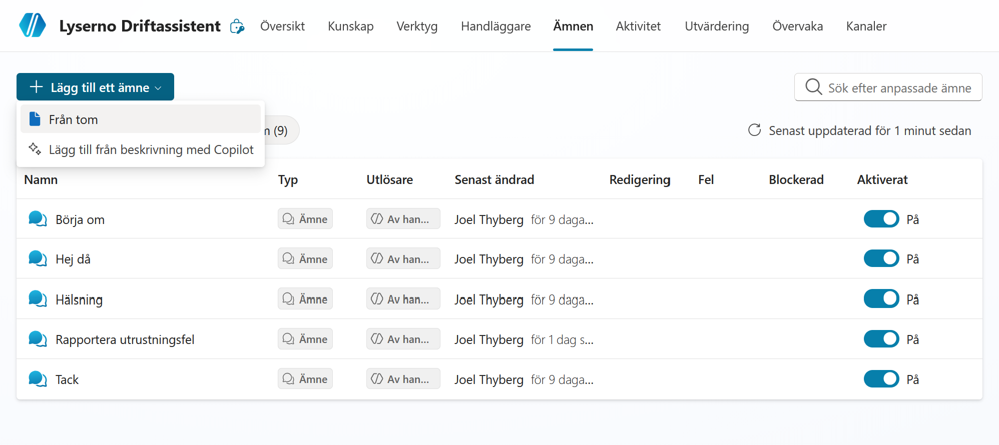
Ge ämnet följande namn:
Granska och skapa arbetsorder
Ange följande modellbeskrivning i utlösaren:
Använd ämnet när felanmälan är verifierad och MCP-uppslagen är klara. Ämnet visar arbetsorderunderlaget och låter användaren godkänna eller avbryta. Vid godkännande skapar ämnet arbetsordern.
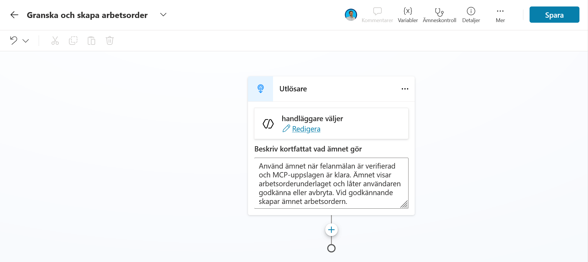
Välj Spara.
Del 2: Kontrollera ämnesinformationen
Öppna Detaljer uppe till höger. På fliken Ämnesinformation kontrollerar du följande:
| Fält | Värde |
|---|---|
| Namn | Granska och skapa arbetsorder |
| Visningsnamn för modell | Granska och skapa arbetsorder |
| Modellbeskrivning | Texten du nyss angav i utlösaren |
| Fråga användaren innan det här verktyget körs | Av |
| Status | På |
Fältet Beskrivning kan lämnas tomt. Modellbeskrivningen talar om för agenten när ämnet ska användas.
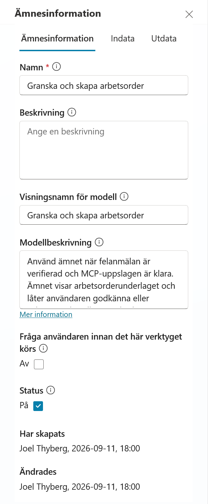
Gå sedan till fliken Indata och välj Skapa en ny variabel.
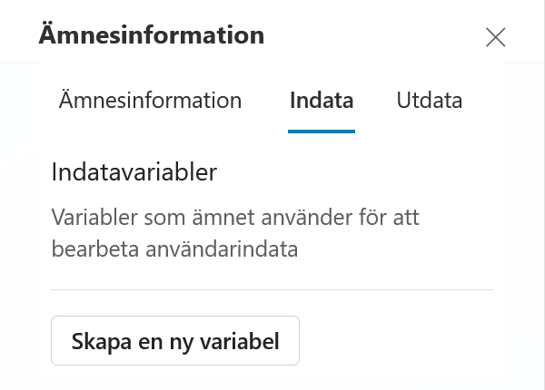
Del 3: Lägg till ämnets indata
Ämnet ska ta emot fem textvärden. Använd följande inställningar för samtliga variabler:
- Hur ska handläggare fylla i dessa indata?:
Fyll i dynamiskt med bästa alternativet (standard) - Variabel datatyp:
String - Identifiera som: lämnas tomt
- Känsliga data:
Av
Skapa variablerna en i taget.
1. Objekt-ID
Variabelnamn och visningsnamn:
assetId
Beskrivning:
Verifierat objekt-ID från MaintenanceContext. Skicka värdet oförändrat.
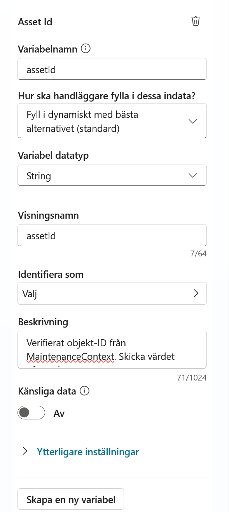
2. Rubrik
Variabelnamn och visningsnamn:
title
Beskrivning:
Kort rubrik som sammanfattar faultSummary. Lägg inte till uppgifter som saknas i det verifierade underlaget.
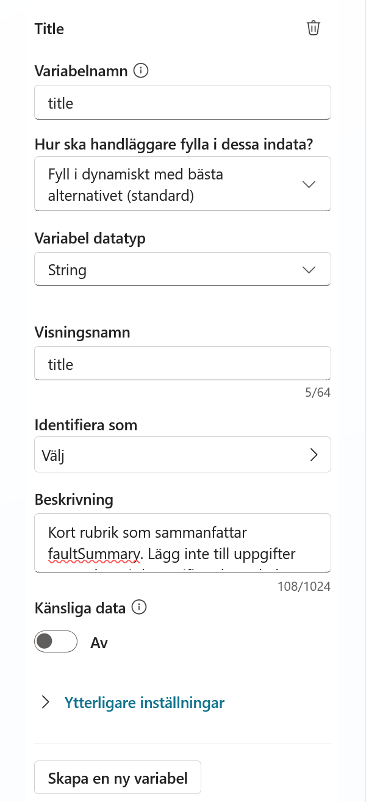
3. Beskrivning
Variabelnamn och visningsnamn:
description
Beskrivning:
Samlad arbetsorderbeskrivning från det verifierade underlaget och MCP-resultaten. Ta med felkod, relevant felhistorik och reservdelsresultat när en kontroll gjordes. Lägg inte till obekräftade uppgifter.
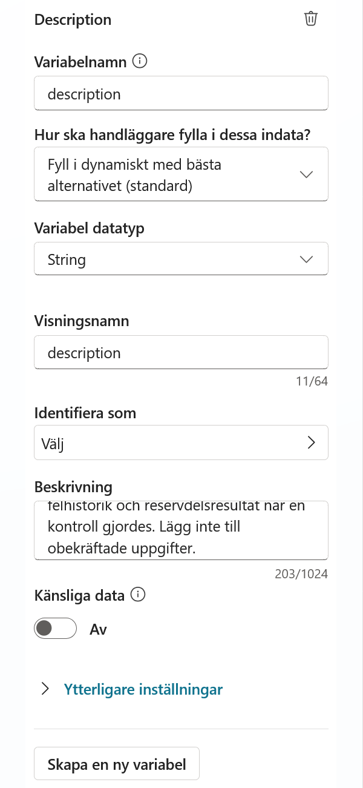
4. Prioritet
Variabelnamn och visningsnamn:
priority
Beskrivning:
Prioritet P1–P4 från MaintenanceContext. Skicka värdet oförändrat.
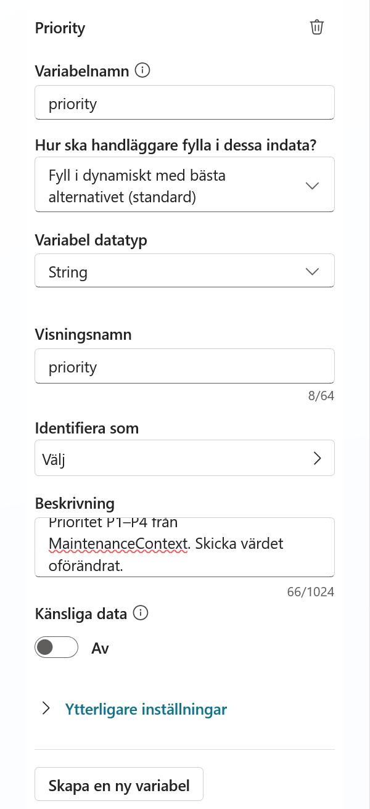
5. Tekniker-ID
Variabelnamn och visningsnamn:
technicianId
Beskrivning:
Tekniker-ID som find_available_technicians returnerade. Skicka exakt det värdet. Det kan vara UNASSIGNED och får inte lämnas tomt.
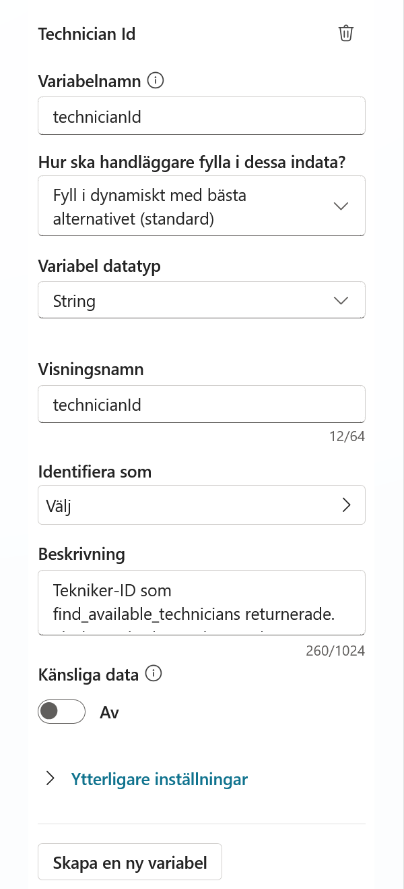
Stäng ämnesinformationen när alla fem variabler är klara. Lägg inte till någon utdatavariabel för ämnet. Varje gren kommer senare att ge användaren ett eget meddelande och avsluta alla ämnen.
Del 4: Lägg till det adaptiva kortet
Ställ dig under utlösaren och välj Fråga med adaptivt kort.
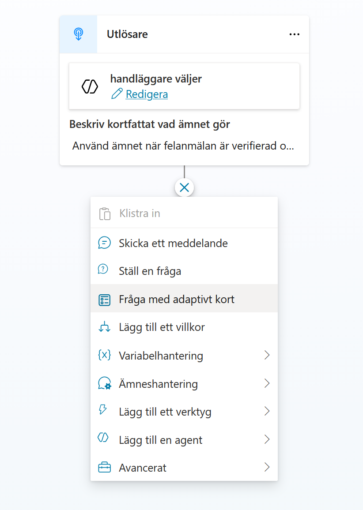
Byt namn på noden till:
Granska arbetsorderunderlag
Öppna nodens meny med de tre punkterna och välj Egenskaper. Kontrollera att formatet är JSON-kort och välj Redigera adaptivt kort.
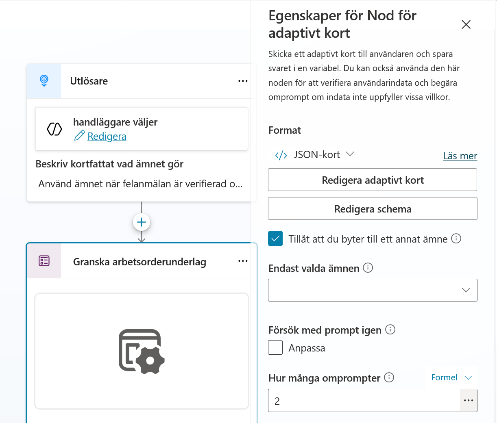
Markera allt i Redigerare för kortets nyttolast, ta bort det och klistra in följande JSON:
{
"type": "AdaptiveCard",
"$schema": "https://adaptivecards.microsoft.com/schemas/adaptive-card.json",
"version": "1.5",
"body": [
{
"type": "TextBlock",
"text": "Kontrollera underlaget",
"weight": "Bolder",
"size": "Large",
"wrap": true
},
{
"type": "TextBlock",
"text": "Kontrollera uppgifterna innan arbetsordern skapas.",
"wrap": true,
"spacing": "Small",
"isSubtle": true
},
{
"type": "FactSet",
"spacing": "Medium",
"facts": [
{
"title": "Objekt-ID:",
"value": "LO-PU-017"
},
{
"title": "Rubrik:",
"value": "Cirkulationspump 17 med läckage"
},
{
"title": "Prioritet:",
"value": "P3"
},
{
"title": "Tekniker-ID:",
"value": "T-103"
},
{
"title": "Rapportör:",
"value": "Joel Thyberg"
}
]
},
{
"type": "TextBlock",
"text": "Beskrivning",
"weight": "Bolder",
"separator": true,
"spacing": "Medium",
"wrap": true
},
{
"type": "TextBlock",
"text": "Pumpen fungerar inte som den ska. Felkod E-42 visas och ett läckage syns vid flänsen.",
"wrap": true,
"spacing": "Small"
},
{
"type": "TextBlock",
"text": "Godkänn för att skapa arbetsordern. Avbryt för att avsluta utan att skapa någon arbetsorder.",
"wrap": true,
"spacing": "Medium",
"separator": true
}
],
"actions": [
{
"type": "Action.Submit",
"id": "approveWorkOrderButton",
"title": "Godkänn och skapa",
"style": "positive",
"data": {
"actionSubmitId": "approve_work_order"
}
},
{
"type": "Action.Submit",
"id": "cancelWorkOrderButton",
"title": "Avbryt",
"data": {
"actionSubmitId": "cancel_work_order"
}
}
]
}
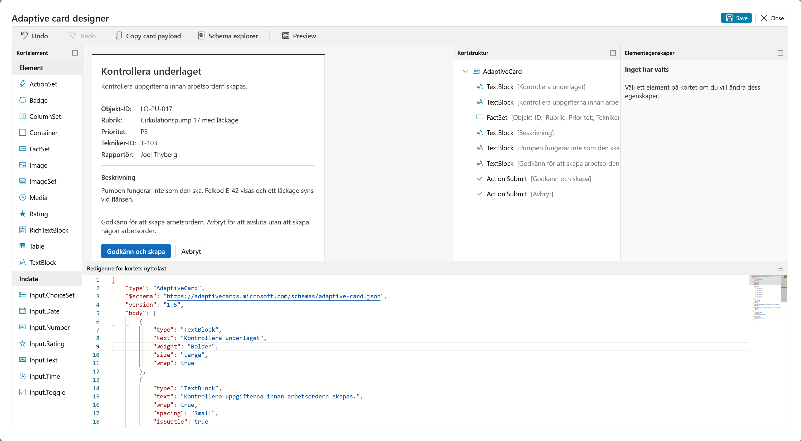
Välj Save och sedan Close.
Kortet visas nu i noden. Rulla längst ner och kontrollera att Utdata (1) innehåller textfältet actionSubmitId.
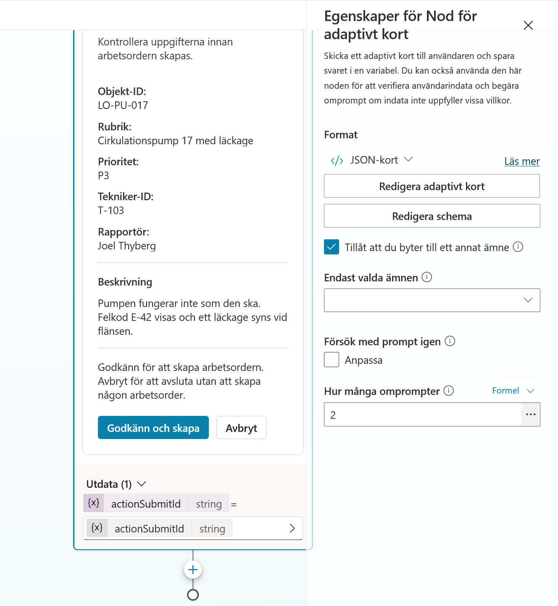
Varför börjar vi med JSON?
JSON-versionen gör mer än att skapa kortets utseende. När kortet sparas läser Copilot Studio värdet actionSubmitId i knapparnas data och skapar kortets utdataschema. Därför visas actionSubmitId under Utdata.
Om vi börjar direkt med en formel kan kortet visas korrekt, men Copilot Studio vet inte vilket utdatavärde knapptryckningen ska lämna. Det kan ge fel om att output eller outputType saknas. Vi sparar därför JSON-versionen först och byter sedan till formeln som hämtar ämnets riktiga värden. Utdataschemat finns då kvar.
Del 5: Byt till ett dynamiskt formelkort
Öppna kortets egenskaper igen. Öppna listan Format och byt från JSON-kort till Formel.
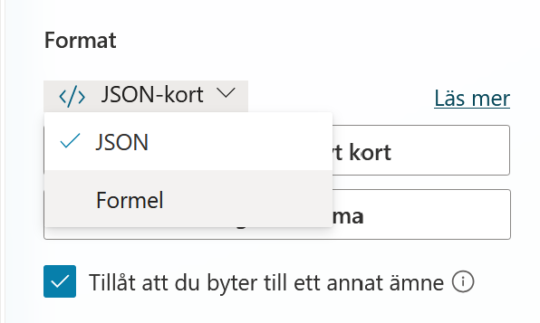
Välj formelfältet och öppna den utökade redigeraren med expansionsikonen.
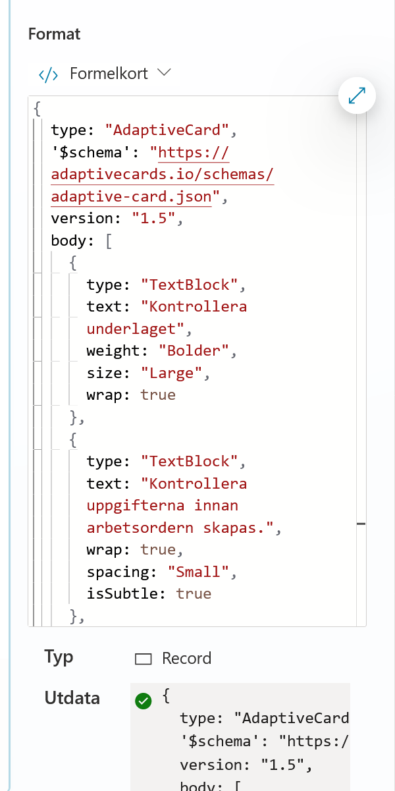
Ersätt den befintliga formeln med följande:
{
'$schema': "https://adaptivecards.microsoft.com/schemas/adaptive-card.json",
type: "AdaptiveCard",
version: "1.5",
body: [
{
type: "TextBlock",
text: "Kontrollera underlaget",
weight: "Bolder",
size: "Large",
wrap: true
},
{
type: "TextBlock",
text: "Kontrollera uppgifterna innan arbetsordern skapas.",
wrap: true,
spacing: "Small",
isSubtle: true
},
{
type: "FactSet",
spacing: "Medium",
facts: [
{
title: "Objekt-ID:",
value: Topic.assetId
},
{
title: "Rubrik:",
value: Topic.title
},
{
title: "Prioritet:",
value: Topic.priority
},
{
title: "Tekniker-ID:",
value: Topic.technicianId
},
{
title: "Rapportör:",
value: System.User.DisplayName
}
]
},
{
type: "TextBlock",
text: "Beskrivning",
weight: "Bolder",
separator: true,
spacing: "Medium",
wrap: true
},
{
type: "TextBlock",
text: Topic.description,
wrap: true,
spacing: "Small"
},
{
type: "TextBlock",
text: "Godkänn för att skapa arbetsordern. Avbryt för att avsluta utan att skapa någon arbetsorder.",
wrap: true,
spacing: "Medium",
separator: true
}
],
actions: [
{
type: "Action.Submit",
id: "approveWorkOrderButton",
title: "Godkänn och skapa",
style: "positive",
data: {
actionSubmitId: "approve_work_order"
}
},
{
type: "Action.Submit",
id: "cancelWorkOrderButton",
title: "Avbryt",
data: {
actionSubmitId: "cancel_work_order"
}
}
]
}
Formeln ersätter exempelvärdena med ämnets indatavariabler. Rapportörens namn hämtas från System.User.DisplayName.
Kontrollera den gröna bocken och förhandsvisningen. Stäng sedan formelredigeraren.
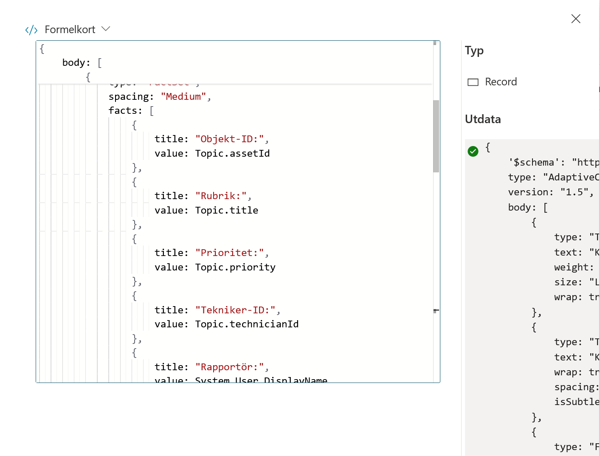
Del 6: Spara användarens val
Under Utdata (1) ska fältet på vänster sida fortfarande heta actionSubmitId. Det är fältnamnet som kommer från kortet och ska inte ändras.
Öppna variabeln till höger om likhetstecknet och byt variabelnamn till:
approvalChoice
Välj Ämne (begränsad omfattning). Variabeln ska inte vara global.
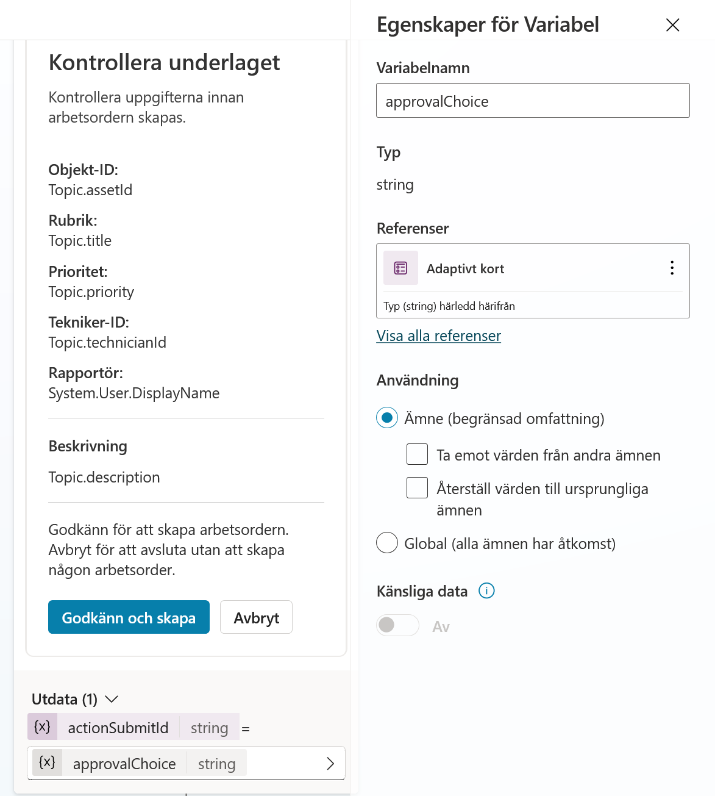
Efter ändringen visar raden att actionSubmitId kopplas till Topic.approvalChoice.
Knapparnas interna värden är approve_work_order och cancel_work_order. De synliga knapptexterna är på svenska, men värdena ska vara kvar på engelska eftersom villkoret använder dem.
Del 7: Lägg till villkoret
Ställ dig under det adaptiva kortet och välj Lägg till ett villkor.
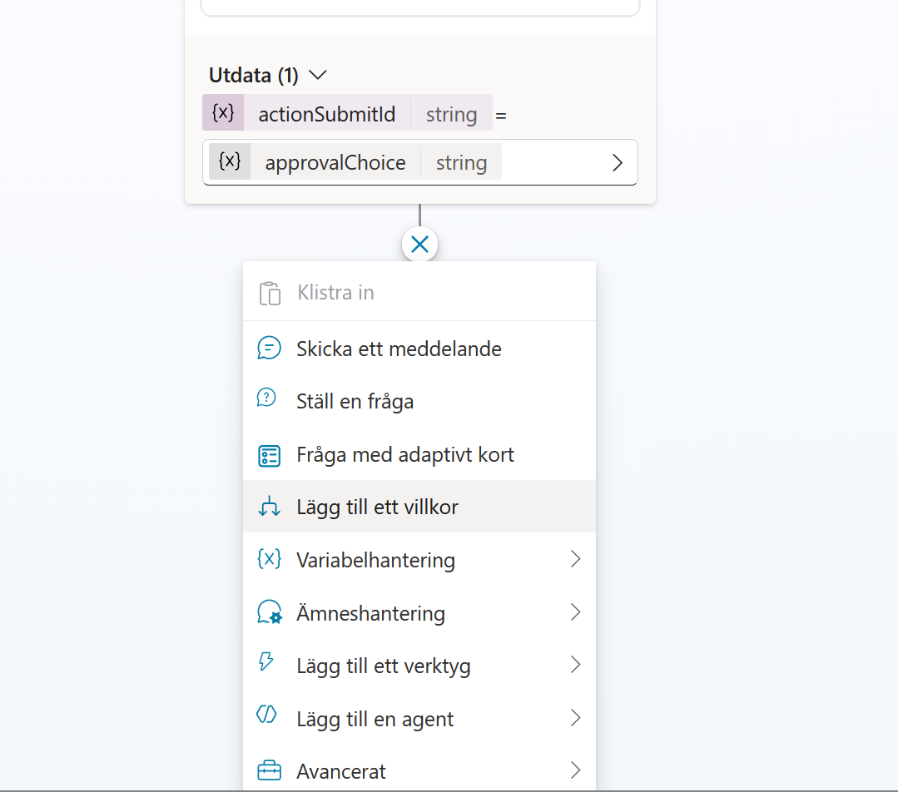
Byt namn på villkorsgruppen till:
Kontrollera godkännande
Öppna variabelväljaren och välj approvalChoice under Anpassad.
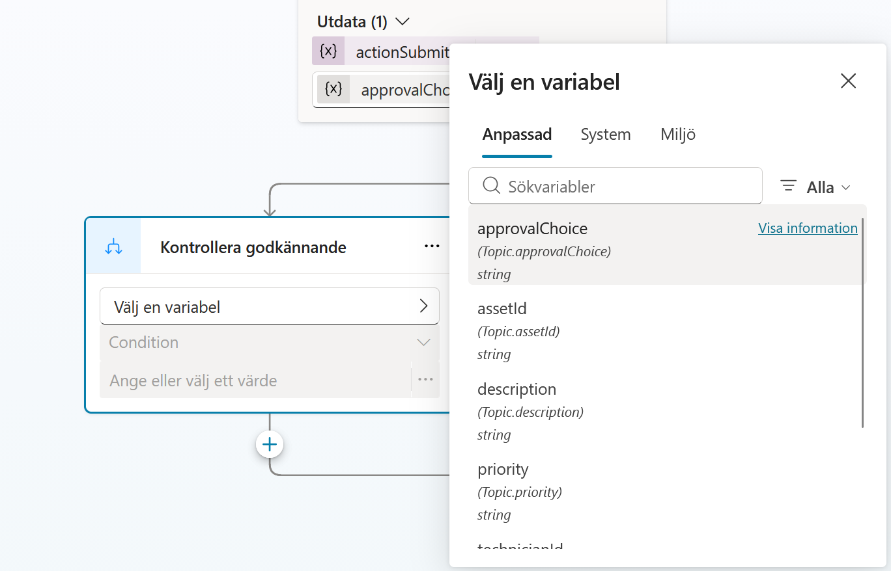
Kontrollera att operatorn är är lika med. Den är normalt förvald. Om en annan operator visas öppnar du listan och väljer är lika med.
I fältet Ange eller välj ett värde klistrar du in:
approve_work_order
Endast värdet approve_work_order får fortsätta i den godkända grenen. cancel_work_order, ett tomt värde och alla oväntade värden går till avbrottsgrenen.
Del 8: Bygg avbrottsgrenen
Byt namn på grenen Alla övriga villkor till:
Meddela att arbetsordern avbröts
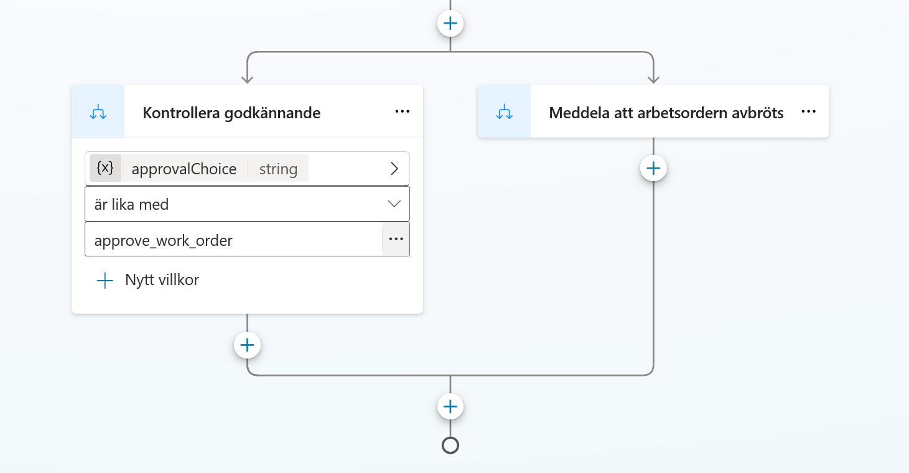
Under Meddela att arbetsordern avbröts väljer du Skicka ett meddelande.
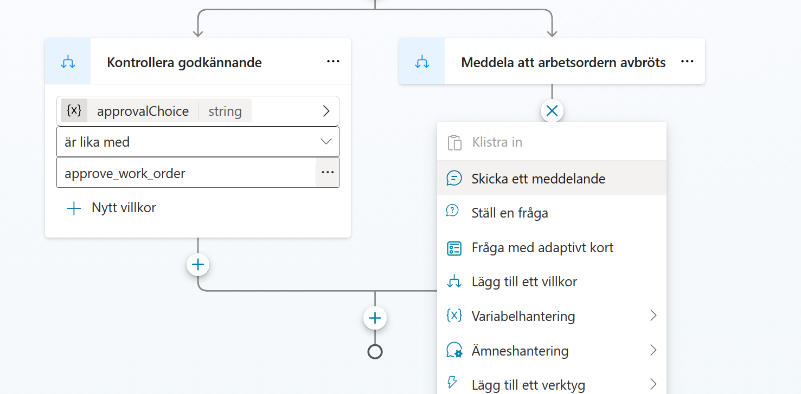
Byt namn på meddelandenoden till:
Meddela att arbetsordern avbröts
Skriv följande meddelande:
Ingen arbetsorder skapades.
Om något i underlaget behöver ändras behöver felanmälan göras om, så att objekt, påverkan, prioritet och övriga uppgifter kan verifieras på nytt.
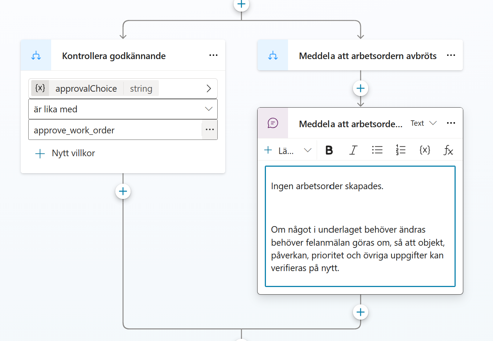
Lägg till nästa nod under meddelandet. Välj Ämneshantering > Avsluta alla ämnen.
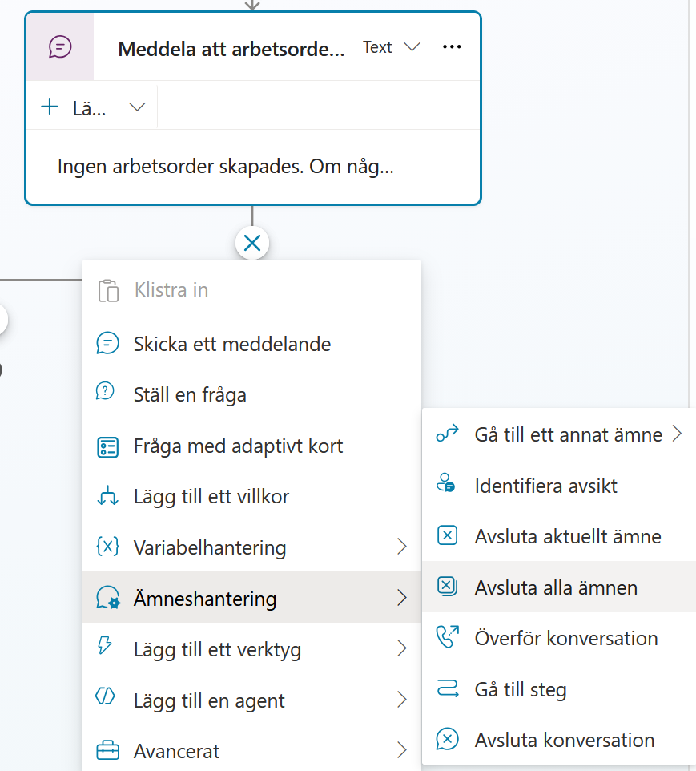
Avbrottsgrenen ska sluta här. Den ska inte återansluta till stegen som skapar arbetsordern.
Del 9: Starta agentflödet i den godkända grenen
Gå till grenen under Kontrollera godkännande. Välj Lägg till ett verktyg och sedan Nytt agentflöde.
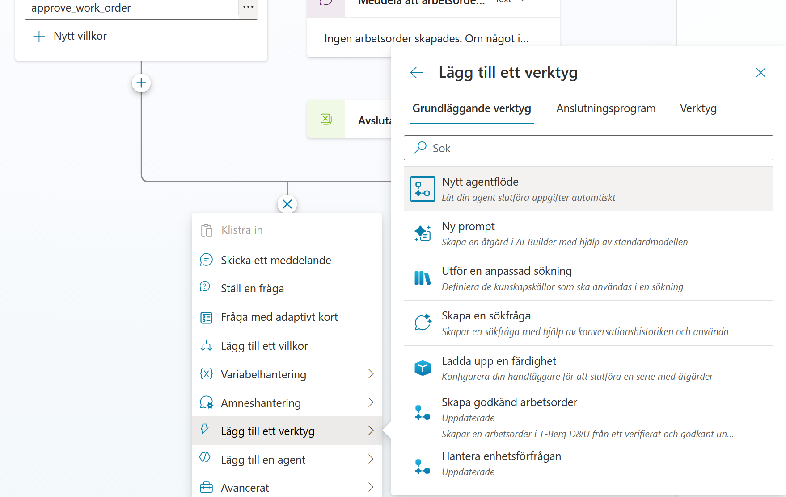
Copilot Studio öppnar ett nytt agentflöde. Låt ämnesfliken vara kvar. I nästa kapitel bygger vi flödet som skapar arbetsordern och skickar bekräftelsemejlet.
Godkännandet är på plats
Ämnet tar emot det verifierade underlaget, visar det i ett adaptivt kort och fortsätter bara när användaren väljer Godkänn och skapa. Vid alla andra svar visas avbrottsmeddelandet och processen avslutas utan att någon arbetsorder skapas.